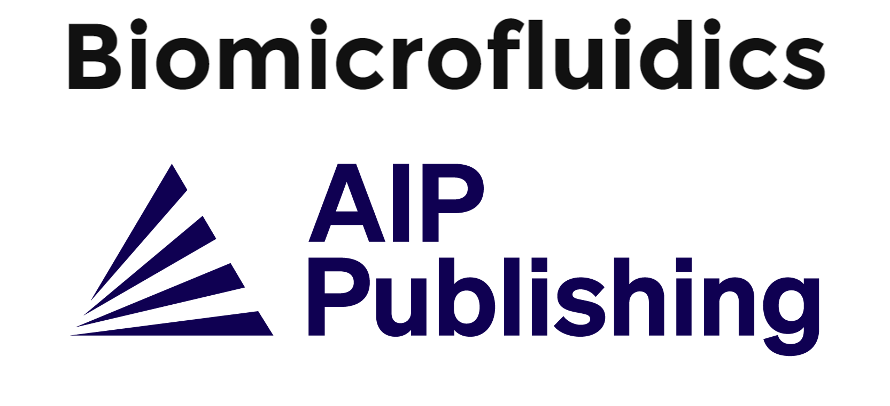

Principal Investigator:
Professor Hsueh-Chia Chang
Bayer Professor of Chemical Engineering
Department of Chemical and Biomolecular Engineering
University of Notre Dame
Chief Technology Officer
Aopia Biosciences
PhD in Chemical Engineering, Princeton University 1980
BS in Chemical Engineering, Caltech 1976
Office : 321 Stinson Remick Hall of Engineering, Notre Dame, IN 46556
Email: hchang@nd.edu
Phone: 574-631-5697
FAX: 574-631-8366
Founding Editor: 
Awards:
Invited Lectures: